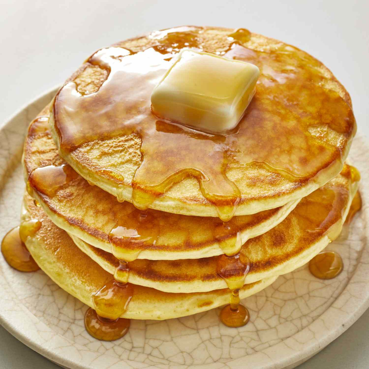

Pancake Recipe

Pancake Ingredients
- 3 eggs
- 100ml milk
- 200ml yogurt
- 150g flour
- 1 pack of baking powder
- a pinch of salt
- 2 tablespoon sugar
- oliveoil
- maple syrup
How to make pancakes
- Stir the eggs until they get foamy
- Mix milk and the yogurt.
- Add gradually flour, baking powder, the milk/yogurt mix, salt and sugar.
- Sitr until the batter gets viscous. Add some mild if it is to thick.
- Bake it with on low flame and add only a little bit of oil.
Add some maple syrup, beet syrup or fruits as you like.